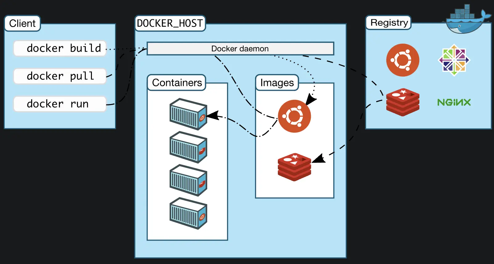
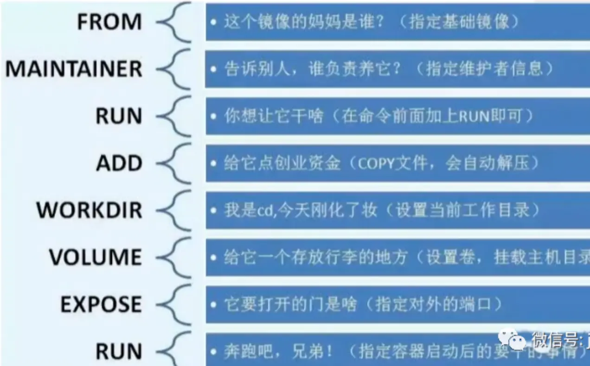
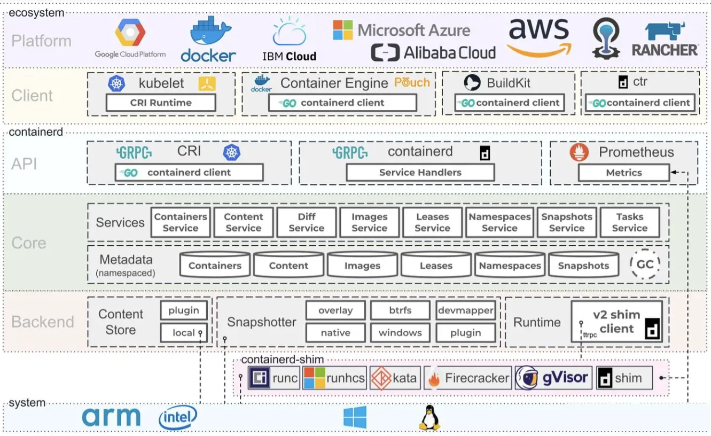

docker
官网 
-
The easiest and recommended way to get Docker Compose is to install Docker Desktop. Docker Desktop includes Docker Compose along with Docker Engine and Docker CLI which are Compose prerequisites.
-
linux服务器单独安装docker,就需要单独安装docker-compose.
dockerfile示意图

containerd示意图

podman集合-开源替代品
阿里云
# 安装docker引擎
yum install docker
# 开机启动
service docker start
# repos地址
vim /etc/docker/daemon.json
{ "registry-mirrors": "https://registry.docker-cn.com", "live-restore": true }
docker run -d -p 8090:80 docker/getting-started
# 容器日志物理目录
/var/lib/docker/containers/ID/ID-json.log
# 设置共享内存
docker --shm-size 256m
# 安装 elasticsearch
docker pull docker.elastic.co/elasticsearch/elasticsearch:7.5.2
# 启动 openjdk 内存空间有要求
docker run -p 9200:9200 -p 9300:9300 -e "discovery.type=single-node" docker.elastic.co/elasticsearch/elasticsearch:7.5.2
# 在linux至少8G,容易跑起来
# 需要继续 docker kibana rancher
# brancher 集群-多个项目,项目-多个命令空间
# rancher 主界面->右下角有个English，点击选择中文
# 单节点安装，重置密码
docker exec -ti <container_id> reset-password
# 必须带上-v $HOME/rancher:/var/lib/rancher/,否则跑不起来
# 导致https://192.168.8.108:8091,https://127.0.0.1:8091(不能访问)
# rancher启动慢,需要等待片刻就能浏览器访问
# docker logs -f rancher查看容器启动日志
docker run -d --restart=unless-stopped -p 8090:80 -p 8091:443 --privileged -v $HOME/rancher:/var/lib/rancher/ rancher/rancher:latest
rEWlGtFhS52EsKIa
https://127.0.0.1:8091
常用命令
所有images都压缩在Docker.qcow2里
#下载安装gerrit
docker pull gerritcodereview/gerrit
#运行gerrit
docker run -ti -p 8080:8080 -p 29418:29418 gerritcodereview/gerrit
#docker 安装(周编译,较新但可能bug)
docker pull jenkinsci/jenkins
chown -R 1000:1000 /root/jenkins_home
docker run -d -p 8080:8080 --restart=always -v /root/jenkins_home:/var/jenkins_home --name jenkins jenkins/jenkins
# 帮助文档
https://www.w3cschool.cn/jenkins/jenkins-e7bo28ol.html
Blue Ocean值得安装
nohup mdbook serve >~/mdbook.nohup 2>&1 &
docker run --name some-mysql -v /my/own/datadir:/var/lib/mysql -e MYSQL_ROOT_PASSWORD=my-secret-pw -d mysql:tag
#安装gitlab,机器性能要好,否则卡死
docker pull gitlab/gitlab-ce
#gerrit是google开源的代码review工具
docker pull gerritcodereview/gerrit
docker run -ti -p 8080:8080 -p 29418:29418 gerritcodereview/gerrit
# http://localhost:8080
#SonarQube检测代码质量平台
docker pull sonarqube
# Create a tag TARGET_IMAGE that refers to SOURCE_IMAGE
docker tag SOURCE_IMAGE[:TAG] TARGET_IMAGE[:TAG]
# 查看image的产生过程,可以得到dockerfile
docker history --no-trunc alpine
container容器管理
#默认显示运行的容器
docker ps
#显示所有容器
docker ps -a
# attach模式, 类似运行于前台的进程，会占据本地的STDIN和STDOUT
docker run nginx
# 进入容器
docker exec --it containerID/containerName /bash
docker exec --it containerID/containerName redis-cli
# detach模式,可以用docker container attach id改为attach模式,类似于后台运行
docker run -d nginx
# 与容器的交互
docker run -it id(container id) command 当command运行结束之后，container的状态也变成了exited的状态
docker exec -it id command 当command运行结束之后，container的状态保持running状态不变
docker stop $(docker ps -q)
#已经停止的，正在运行的不能删除
docker rm $(docker ps -a -q)
image管理
# 注意images
docker images --help
Usage: docker images [OPTIONS] [REPOSITORY[:TAG]]
List images
Options:
-a, --all Show all images (default hides intermediate images)
--digests Show digests
-f, --filter filter Filter output based on conditions provided
--format string Pretty-print images using a Go template
--no-trunc Donot truncate output
-q, --quiet Only show image IDs
# 删除image为none
docker images|grep none|awk '{print $3 }'|xargs docker rmi
# 注意image
docker image --help
Usage: docker image COMMAND
Manage images
Commands:
build Build an image from a Dockerfile
history Show the history of an image
import Import the contents from a tarball to create a filesystem image
inspect Display detailed information on one or more images
load Load an image from a tar archive or STDIN
ls List images
prune Remove unused images
pull Pull an image or a repository from a registry
push Push an image or a repository to a registry
rm Remove one or more images
save Save one or more images to a tar archive (streamed to STDOUT by default)
tag Create a tag TARGET_IMAGE that refers to SOURCE_IMAGE
volume管理
docker volume --help
Usage: docker volume COMMAND
Manage volumes
Commands:
create Create a volume
inspect Display detailed information on one or more volumes
ls List volumes
prune Remove all unused local volumes
rm Remove one or more volumes
其实VOLUME指令只是起到了声明了容器中的目录作为匿名卷，但是并没有将匿名卷绑定到宿主机指定目录的功能。 当我们生成镜像的Dockerfile中以Volume声明了匿名卷，并且我们以这个镜像run了一个容器的时候，docker会在安装目录下的指定目录下面生成一个目录来绑定容器的匿名卷（这个指定目录不同版本的docker会有所不同），我当前的目录为：/var/lib/docker/volumes/{容器ID}。 volume只是指定了一个目录，用以在用户忘记启动时指定-v参数也可以保证容器的正常运行。 那么如果用户指定了-v，自然而然就不需要volume指定的位置了
network管理
Usage: docker network COMMAND
Manage networks
Commands:
connect Connect a container to a network
create Create a network
disconnect Disconnect a container from a network
inspect Display detailed information on one or more networks
ls List networks
prune Remove all unused networks
rm Remove one or more networks
Run 'docker network COMMAND --help' for more information on a command
其他命令
Management Commands:
builder Manage builds
buildx* Docker Buildx (Docker Inc., v0.8.1)
compose* Docker Compose (Docker Inc., v2.3.3)
config Manage Docker configs
container Manage containers
context Manage contexts
image Manage images
manifest Manage Docker image manifests and manifest lists
network Manage networks
node Manage Swarm nodes
plugin Manage plugins
scan* Docker Scan (Docker Inc., v0.17.0)
secret Manage Docker secrets
service Manage services
stack Manage Docker stacks
swarm Manage Swarm
system Manage Docker
trust Manage trust on Docker images
volume Manage volumes
私有部署dockerhub
# 利用docker公司提供的工具
docker pull registry
# -v 主机目录:容器目录,registry存储仓库中镜像到/var/lib/registry
docker run -d -p 5000:5000 --restart=always -v /opt/dockerhub:/var/lib/registry registry
# 从dockerhub拉取nginx最新版
docker pull nginx
# 打上特定hub的标签
docker tag nginx localhost:5000/nginx
# 推送nginx到目标hub中去
docker push localhost:5000/nginx
# http://主机ip:5000/v2/_catalog 查看信息
# 增加配置,docker默认走https，但是registry默认走http /etc/docker/daemon.json
"insecure-registries":[
"主机:5000"
]
jenkins 另一个开源替代品gocd
-
忘记密码-admin密码未更改情况
- cat ~/.jenkins/secrets/initialAdminPassword 就是初始化密码
- 访问jenkins页面，输入管理员admin，及刚才的密码；
- 进入后可更改其他管理员密码；
-
brew 启动不了
# Bootstrap failed: 5: Input/output error
# Error: Failure while executing; `/bin/launchctl bootstrap gui/503 /Users/zzi/Library/LaunchAgents/homebrew.mxcl.jenkins-lts.plist` exited with 5.
# 试试
brew services restart jenkins-lts
- SSH remote hosts配置中Pty一定不能勾选,否则nohup需要sleep才有效
- 证书是统一管理各种,包括ssh,gitlab等等.
- Multijob插件用来批量构建工程,过时了，改用'parallel' step along with 'BlueOcean' can basical
- Multiple SCMs用来处理多个git/svn仓库构建一个项目
遇到问题
- Docker拉取镜像时出现Error response from daemon: Get https://registry-1.docker.io/v2/: net/http: TLS handshake timeout问题
"registry-mirrors": ["https://bytkgxyr.mirror.aliyuncs.com","https://registry.docker-cn.com","http://hub-mirror.c.163.com"]
golang示例
docker新版本引入多阶段,主要用来优化不同阶段要求不同,例如编译时需要编译工具,但运行时不需要的.运行时只要引入编译产物就可以了.
# syntax=docker/dockerfile:1
## Build
FROM golang:1.16-buster AS build
# 使用 WORKDIR 指令可以来指定工作目录（或者称为当前目录），以后各层的当前目录就被改为指定的目录，如该目录不存在， WORKDIR 会帮你建立目录
WORKDIR /app
# 从构建上下文中复制文件到容器
COPY go.mod ./
COPY go.sum ./
RUN go mod download
COPY *.go ./
RUN go build -o /docker-gs-ping
## Deploy
FROM gcr.io/distroless/base-debian10
WORKDIR /
COPY --from=build /docker-gs-ping /docker-gs-ping
EXPOSE 8080
USER nonroot:nonroot
# 如果设定了ENTRYPOINT,则cmd,和run后面参数都作为entrypoint参数，
# 否则按run后面参数作用cmd运行
# 没有entrypoint,cmd都不存在，则按cmd运行
ENTRYPOINT ["/docker-gs-ping"]
docker build -t docker-gs-ping:multistage -f Dockerfile.multistage .
python示例
# syntax=docker/dockerfile:1
FROM python:3.8-slim-buster
WORKDIR /app
COPY requirements.txt requirements.txt
RUN pip3 install -r requirements.txt
COPY . .
CMD [ "python3", "-m" , "flask", "run", "--host=0.0.0.0"]
docker tag python-docker:latest python-docker:v1.0.0
minikube-单机版精简k8s
你可以使用 kubectl 命令行工具来启用 Dashboard 访问 kubectl 会使得 Dashboard 可以通过 http://localhost:8001/api/v1/namespaces/kubernetes-dashboard/services/http:kubernetes-dashboard:/proxy/ 访问。
kubectl proxy